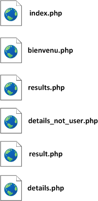
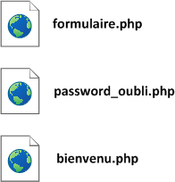
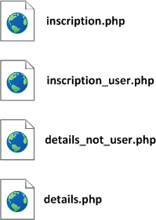
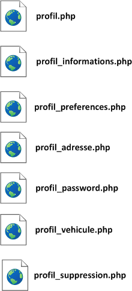
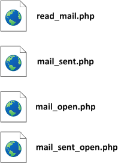

1. Module des inscriptions
Acteur: Covoitureur potentiel (conducteur ou passager)
Description: Un covoitureur potentiel désire se créer un compte sur le site de covoiturage. Il entre ses informations et un compte lui est créé.
Dépendances: Aucune.
Pré-condition: Le covoitureur n’a pas déjà un compte.
Post-condition: Le comte est créé et le covoitureur pourra se connecter au système.
Scénario :
|
Acteur |
Système |
|
1. Le futur covoitureur entre ses informations de contact (nom, prénom, date de naissance, sexe, ville, mail, numéro de téléphone) et un mot de passe d’au moins 8 caractères. |
|
|
|
2. Vérification des informations soumises, création d'un compte |
Exceptions :
2. Module de gestion des comptes
2.1. Connexion au système
Acteur: Tous les acteurs, soit les covoitureurs-membres (passagers et conducteurs) ou l’administrateur.
Description: Un usager existant dans le système veut s’y connecter.
Dépendances: 1.1. Demander une inscription
Pré-condition: L’usager est inscrit sur le site de covoiturage.
Post-condition: L’usager est connecté au système.
Scénario :
|
Acteur |
Système |
|
1. L’usager se connecte en entrant son login (mail) et son mot de passe |
|
|
|
2. Connexion de l’usager au système, création d’une session |
Exceptions :
2.2. Supprimer son compte
Description: Un covoitureur-membre n’utilise plus son compte et désire le supprimer.
Dépendances: 1.1. Demander une inscription
Pré-condition: Le covoitureur est inscrit sur le site de covoiturage, et il est connecté.
Post-condition: Le covoitureur n’est plus inscrit sur le site.
Scénario :
|
Acteur |
Système |
|
1. Le covoitureur-membre demande la suppression de son compte |
|
|
|
2. Demande de confirmation au covoitureur |
|
3. Acceptation de la confirmation |
|
|
|
4. Suppression du compte, déconnexion du système |
Exceptions :
1. Si le covoitureur-membre refuse la confirmation, la suppression du compte est annulée.
2.3. Modifier les informations d’un compte
Description: Un covoitureur-membre désire modifier ses détails de profil comme infos générales, préférences, adresse, mot de passe, véhicule.
Dépendances: 1.1. Demander une inscription
Pré-condition: Le covoitureur est inscrit sur le site, et il est connecté.
Post-condition: Les informations personnelles du covoitureur sont modifiées.
Scénario :
|
Acteur |
Système |
|
1. Le covoitureur-membre entre ses nouvelles informations personnelles |
|
|
|
2. Vérification des informations soumises, sauvegarde des modifications |
Exceptions :
3. Module de gestion des trajets
Acteur: Passager, Conducteur
Description: Le covoitureur-membre crée un trajet en désignant une ville de départ, son code postal et un lieu d’embarquement ainsi qu'une ville d’arrivée, son code postal et un lieu de dépôt des passagers.
Dépendances: 2.1. Connexion au système
Pré-condition : Le covoitureur est inscrit sur le site, et il est connecté.
Post-condition : Le trajet est inscrit dans la base de données et disponible pour les autres covoitureurs.
Scénario :
|
Acteur |
Système |
|
1. Le covoitureur-membre saisit la suite de points du trajet, ainsi que la date et l’heure. Les conducteurs saisissent également leurs préférences et le prix. |
|
|
|
2. Le système vérifie les informations saisies |
|
3. Le covoitureur-membre approuve la création du trajet |
|
|
|
4. Le système attribue un numéro d’identification au trajet et l’enregistre dans la base de données |
Exceptions :
4. Module de gestion des réservations
4.1 Réserver une place dans un trajet
Acteur: Passager
Description: Un passager effectue une réservation à bord d’un itinéraire proposé par un conducteur. Même si c’est un autre conducteur dans un autre itinéraire, il est considéré comme étant un passager quand il fait une réservation dans un itinéraire.
Dépendances: 2.1. Connexion au système, 3.1. Proposer un trajet
Pré-condition : Le passager est identifié et authentifié.
Le trajet existe déjà.
Le nombre de places restantes est non nul.
Post-condition : Le nombre de places dans l’itinéraire est décrémenté du nombre de places réservées par le covoitureur.
Scénario :
|
Acteur |
Système |
|
1. Le passager effectue une recherche de trajet (ville de départ, celle d'arrivée, date) |
|
|
|
2. Le système vérifie l’existence effective des informations saisies. |
|
|
3. Le système effectue une recherche en fonction des données entrées par le passager et sort des trajets retrouvés en ordre de pertinence. |
|
4. Le passager choisi le trajet qui lui convient le mieux et réserve sa place en cliquant sur un bouton "Réserver". |
|
|
|
5. Le système décrémente le nombre de places dans le trajet. |
Exceptions :
4.2. Rechercher un trajet
Acteur: Futurs covoitureurs ainsi que covoitureurs-membres (conducteurs, passagers)
Description: Un trajet figure dans les résultats de recherches tant que la date du voyage est ultérieure à celle du jour.
Dépendances: 2.1. Connexion au système, 3.1. Proposer un trajet
Pré-condition : Le trajet existe déjà.
Post-condition : Le résultat de recherche retourné concerne les itinéraires programmés pour une date ultérieure à la date courante.
Scénario :
|
Acteur |
Système |
|
1. L’usager saisit la ville de départ, celle d'arrivée ainsi que la date du voyage. Il suffit de saisir juste l'un des trois champs proposés pour pouvoir lancer la recherche (casse n'est pas importante). |
|
|
|
2. Vérification de l'existence des villes |
|
|
3. Le système recherche les trajets correspondants aux critères de recherche et les affiche à l’usager. |
Exceptions :
1. L’un des deux lieux n’existe pas : Message d'avertissement + Retour à (1).
2. Aucun itinéraire ne correspond aux critères de la recherche : Notification de l’inexistence d’aucun résultat pour l’entrée saisie + Retour au menu principal.
Le site est développé selon l'architecture hiérarchisée qui une des meilleures façons d'organiser des blocs d'information complexes. Cette architecture s'adapte particulièrement bien au site Web car les différents thèmes dépendent ainsi d'une seule et unique page - la page d'index ou page d'accueil. En outre, les utilisateurs sont souvent familiarisés avec les diagrammes hiérarchisés comme les organigrammes et trouveront la métaphore facilement compréhensible pour les aider dans leur navigation.
Le schéma ci-dessous résume l’architecture détaillée du site de covoiturage qui est basé sur deux types de connexions (mode connecté et non-connecté).

Le schéma ci-dessous décrit le fonctionnement de l’espace administrateur. L’administrateur est le seul à avoir accès à l’information complète du système. Il peut faire la gestion globale du système, par exemple suspendre n’importe quel compte.

Page d'accueil |
La
page ‘index.php’ est chargée
automatiquement lorsque le DNS ‘etucovoiturage’
est saisi dans la barre
d’adresse du navigateur. Sachant qu’il y a une
vérification de l’existence
d’une session à l’aide de la fonction
‘verif_session_var()’,
si l’utilisateur est toujours connecté,
donc ‘index.php’ redirige
automatiquement l’utilisateur vers la page
‘bienvenu.php’
(espace personnel
de l’utilisateur). Si après
vérification aucune session n’est
détectée, l’utilisateur
reste sur la page ‘index.php’.
Un
utilisateur:
Techniquement
parlant, l’attribution
des droits dépend de plusieurs conditions,
elles-mêmes dépendent
de la vérification de la session en
cours.
L’utilisateur
non connecté a la
possibilité de consulter les différentes
informations situées dans le pied de
page (A propos, Vos questions sur le covoiturage, Conditions
Générales
d'Utilisation, Les avantages du covoiturage, etc.). Sur ces pages il
n’y a
aucun contrôle de session (accès libre). |
Formulaire d'inscription

|
Pour
pouvoir bénéficier de tous les services offerts
par le site de covoiturage,
l’utilisateur doit se connecter. Si c’est sa
première visite du site, il devra
d’abord s’inscrire sur le site. Une fois sur la page ‘formulaire.php’, l’utilisateur saisit son nom, prénom, date de naissance, login, mot de passe, ville et numéro de téléphone. Ce formulaire est contrôlé par PHP et JavaScript, derrière chaque `input` il y a une fonction qui vérifie l’exactitude du format d’insertion :
Si
lors de l’inscription l’utilisateur n’a
pas renseigné l’un des champs
obligatoires, le formulaire se recharge en gardant les valeurs
déjà saisies. En
cas d’erreur, la page reste bloquée en signalant
par un message clair l’erreur.
Concernant le champ login, la fonction ‘mailexist($mail)’ se
connecte à la base de données et
vérifie l’existence du login indiqué
par le
covoitureur : si c’est bien le cas,
l’utilisateur se tient alors informé. Le
formulaire d’inscription dispose également de deux
checkboxes et un bouton
radio. Le bouton radio tient en considération le souhait de
l’utilisateur par
rapport à l’affichage de son numéro de
téléphone dans les annonces. La
première
checkbox concerne les offres des partenaires. Quant à la
seconde, elle sert à
s’assurer que l’utilisateur confirme avoir lu les
Conditions Générales
d’Utilisation du site. Si cette checkbox n’est pas
cochée, une alerte JS incite
l’utilisateur à le faire. Une
fois que le formulaire a bien été rempli, la
fonction ‘insertion()’
se charge de créer l’espace personnel de
l’utilisateur ainsi
que d’envoyer un
email contenant un lien d’activation à
l’adresse mail indiquée lors de
l’inscription.
Si
l’utilisateur essaie de se connecter sans avoir
activé son compte, un message
clair lui est affiché en l’incitant à
activer son compte. Sur
la page ‘formulaire.php’
figure également
le lien de récupération du mot de
passe perdu. Si l’utilisateur clique sur ce lien,
c’est la page ‘password_oubli.php’
qui se charge en demandant de saisir son
adresse mail à laquelle par
la suite sera envoyé un nouveau mot de passe. Compte
tenu du fait que les mots de passe sont stockés dans la base
de données sous
une forme cryptée à l’aide de la
fonction de hachage ‘md5()’
(il en déduit qu’il est impossible de les
récupérer sous une
forme non-cryptée), la fonction ‘newChaine()‘
génère automatiquement un nouveau mot de passe de
8 caractères qui remplacera
l’ancien. Avant d’envoyer le nouveau mot de passe,
le script vérifie aussi que
le mail indiqué est bien présent dans la base de
données. Le
formulaire de connexion, contrôlé par PHP, permet
d’accéder à l’espace membre.
Si les identifiants saisis sont corrects, l’utilisateur passe
à la page ‘bienvenu.php’,
sinon un message clair l’informe de l’erreur
survenue. Dès
que l’espace membre a été
créé, l’utilisateur peut
désormais bénéficier de toutes
les fonctionnalités du site. |
Rechercher un trajet |
La
fonction de restriction d’accès aux
fonctionnalités de réservation et de
contact de l’annonceur d’un trajet est
désactivée automatiquement, mais elle
vérifie
constamment que l’utilisateur est bien connecté,
sinon elle l’invite à se
connecter. Pour contacter un abonné, le seul moyen est de cliquer sur l’onglet `message` figurant dans la fenêtre affichant les détails d’une annonce (affiché par JavaScript).
Une
fois la réservation effectuée, le nombre de
places est automatiquement décrémenté.
S’il ne reste plus de places disponibles dans un trajet, la
fonctionnalité
réservation est désactivée et la
mention `complet` apparaît sur l’annonce. |
Déposer un trajet
|
Dans
cette partie (‘trajet_user_
step_1.php’), l’utilisateur a
le choix entre
Conducteur et Passager. Il est demandé de saisir la ville de
départ + son code
postal, lieu de départ, ville d’arrivée
+ son code postal et le lieu d’arrivée.
En cliquant sur le bouton « Valider et Passer
à l’étape 2 », on
récupère
la saisie dans des variables de session transportables en pages ‘trajet_user_
step_2.php’ et ‘trajet_user_ step_3.php’. Pour
chaque valeur saisie par l’utilisateur, il y a des fonctions
vérifiant l’exactitude
des formats d’insertion des champs :
Dans
la page ‘trajet_user_
step_2.php’, si l’utilisateur
ne passe pas par la
page ‘trajet_user_
step_1.php’, une
redirection automatique le renvoie à
l’étape précédente
(vérification des
variables de session). Il y a deux cas de figure possibles :
Si
tout va bien, une redirection vers la page
‘trajet_user_ step_3.php’ est
effectuée après avoir cliqué sur le
bouton ‘Valider et passer
à l’étape 3’. Dans
la
page ‘trajet_user_ step_3.php’, si
l’utilisateur ne passe pas par ‘trajet_user_
step_2.php’, une redirection automatique le renvoie
à l’étape
précédente
(vérification des variables de session).
Il y a deux cas de figure possibles :
A
ce stade, les variables de session correspondant au
dépôt d’un trajet sont
vidées pour permettre une nouvelle proposition de trajet. |
Mon profil |
Dans
cette partie du site (‘profil.php’),
il y a 6
fonctionnalités :
|
Mes messages |
Si
aucun message concernant l’utilisateur n’est
présent dans la base de données,
« aucun
message reçu » est affiché. A
partir d’une requête SQL récupérant
les titres, contenu, date et l’heure et
grâce à la fonction
‘getExpediteur($id)’
on récupère l’identifiant de
l’expéditeur du message .
Un clique sur le titre du message fait apparaître une
fenêtre JavaScript
contenant les détails du message en question ainsi
qu’un champ d’une éventuelle
réponse et un bouton d‘expédition (PHP,
MySQL, JavaScript).
|
Mes annonces |
Cette
page (‘annonces.php’) affiche
l’historique des annonces sous
forme de tableau: type d’annonce (conducteur/passager), ville
de départ, ville
d’arriver, date, heure, nombre de places
réservées et prix. Tout cela grâce à une fonction
récupérant à partir
d’une
requête SQL les informations ci-dessus. Si
l’utilisateur n’a publié aucune annonce,
« aucune annonce » est
affiché. |
Mes réservations |
Cette page (‘reservation.php’) affiche l’historique des annonces sous forme de tableau : ville de départ, ville d'arrivée, date de départ, heure de départ, nom du conducteur et prix. Tout cela grâce à une fonction récupérant à partir d’une requête SQL les informations ci-dessus. Et si l’utilisateur n’a effectué aucune réservation, « aucune réservation » est affiché. |
Cette partie est décrite dans la partie Définitions des besoins